Méta inégalités
1. Le cours
1.1. Inégalités : première partie
1.1.1. Rappel des notations
Soit \(A\) et \(B\) deux nombres, alors :
| Inégalités | Signification |
|---|---|
| \(A < B\) | \(A\) est strictement plus petit que \(B\) |
| \(A > B\) | \(A\) est strictement plus grand que \(B\) |
| \(A \leq B\) | \(A\) est plus petit ou égal à \(B\) |
| \(A \geq B\) | \(A\) est plus grand ou égal à \(B\) |
1.1.2. Sur l'axe des abscisses
Pour chaque axe, donner son inéquation associée.
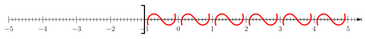
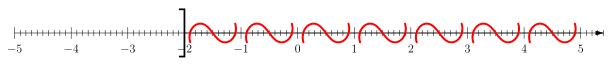
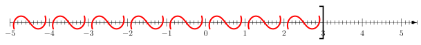
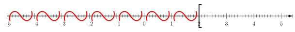
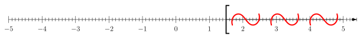
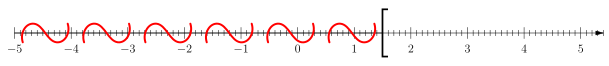
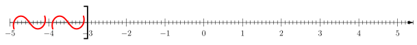
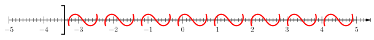
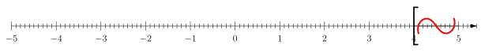
1.1.3. Sur l'axe des ordonnées
Résoudre une inéquation \(f(x) \leq k\) revient à trouver l'ensemble des nombres \(x\) tels que \(f(x) \leq k\).
Pour quelles valeurs \(x \in \mathbb{R}\) a-t-on : \[2x +1\leq 7\]
Réponse : Pour \(x \leq 3\). On dira que \(2x+1 \leq 7\) si et seulement si \(x \leq 3\). Plus tard, on écrira l'ensemble des solutions sous la forme d'un intervalle.
Grâce à la représentation de la courbe d'une fonction \(f\), on peut résoudre graphiquement toutes les inéquations de la forme \(f(x) \leq k\).
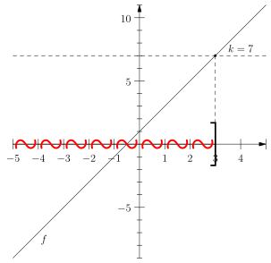
Figure 1 : Résolution graphique de \(f(x) \leq 7\) pour \(f(x) = 2x+1\)
1.2. Inéquation : Résoudre des inégalités affines
1.2.1. Résoudre des inéquations affines
Une inéquation est une équation avec une inégalité à la place d'une inégalité.
Dans une inéquation, on peut ajouter ou soustraire le même nombre dans chaque terme de l'inéquation.
Si \(x + 3 > 12\), alors \(x > 9\).
Dans une inéquation, on peut multiplier ou diviser par un nombre positif non nul chaque terme de l'inéquation.
Si \(3x > 12\) alors \(x > 4\)
Dans une inéquation, si on multiplie ou divise par un nombre négatif non nul alors on renverse l'inéquation.
Si \(-3x > 12\), alors \(x < 4\).
En combinant toutes ces techniques, on peut résoudre des inéquations comme la suivante : \[ -2x + 3 \leq 4x + 5 \] On procède alors comme il suit :
\begin{align*} -2x + 3 &\leq 4x + 5 \\ -2x &\leq 4x + 2 \\ -6x &\leq 2 \\ x &\geq \frac{2}{-6} \\ x & \geq -\frac{1}{3} \end{align*}Les solutions cherchées correspondent à l'intervalle \(x \in [-1; + \infty[\). Vérifiez les solutions grâce à la figure suivante !
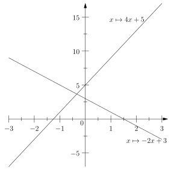
Figure 2 : Représentation graphique des deux fonctions de l'exemple précédent. Retrouvez-vous le résultat espéréré ?
Les résolutions inéquations servent aussi à faire des tableaux de signe de fonction affine.
Pour établir le tableau de signe de \(f(x) = -3x + 2\) on peut résoudre l'inéquation : \[ -3x + 2 \geq 0 \] En appliquant les techniques vues plus haut, on aboutit à \(x \leq \frac{2}{3}\). Donc \(f\) est positive sur l'intervalle \(x \in \left] -\infty; \frac{2}{3}\right]\), et négative ailleurs. On résume tout cela grâce au tableau de la figure 3.
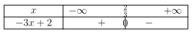
Figure 3 : Exemple de tableau de signe d'une fonction affine
1.2.2. Résoudre certaines inéquations non affines – cas de la parabole
Si on souhaite résoudre l'inéquation : \[ x^{2} \leq 5 \] on peut commencer par tracer la courbe représentative de \(x^{2}\), et représenter l'axe \(y = 5\).
On peut ainsi lire la solution : \vspace{2cm}
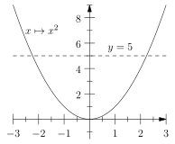
Figure 4 : On résout l'inéquation \(x^2\leq 5\)
Et que se passe-t-il si l'on souhaite résoudre l'inéquation \(x^2\geq 5\) ?
Montrer que \(x^2 - 5 = (x + \sqrt{5})(x - \sqrt{5})\). En quoi cela nous sert-il pour résoudre l'inéquation \(x^2 \leq 5\) ?